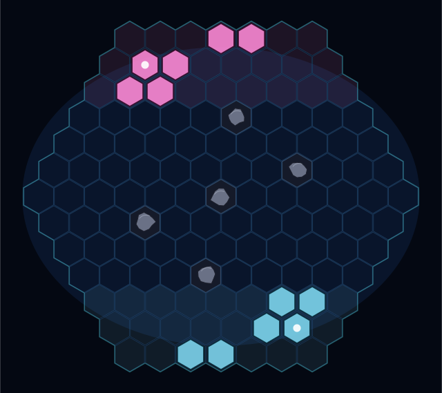
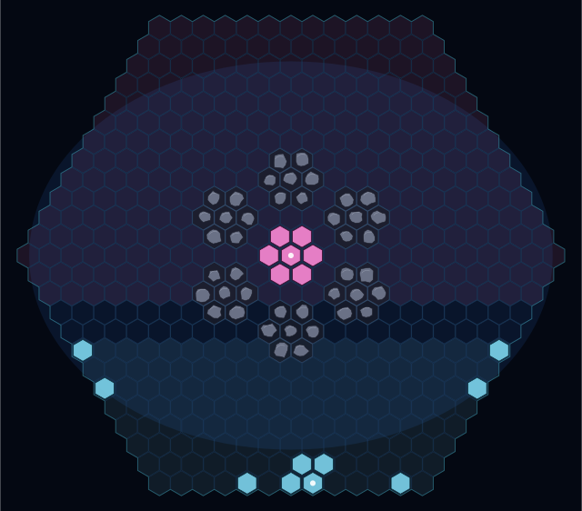
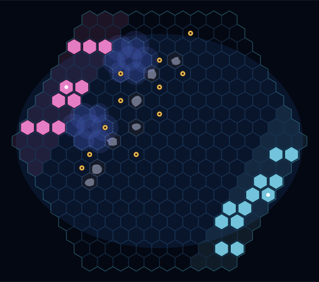
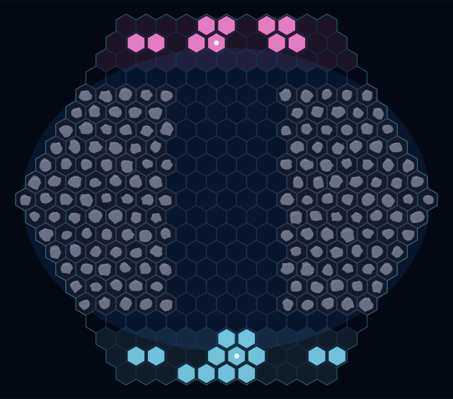

Ten boards to try
Open the field manual: how to play, every ship part and the rules in plain words.
You are player 1; the computer is player 2. Boards are listed from easiest to hardest, with First Light first so you can learn the controls. Each board is a file in rules/boards/: edit it and reload. To play a friend by pasted codes, open the board, choose a seat in the game's own menu and send the game code; your friend does not need this page.

1. First LightMediumThe smallest board: a quick, even duel to learn the controls. A flagship and a gunboat each, with five rocks to hide behind.Try: step a hex before you fire; fire from a rock edge so only one of them has a line on you.
5. Pawn StormEasySix one-laser skiffs close in on a dreadnought in a cage of rock. It can only chase one of you; two shots on the same segment in one turn get through its shield.Try: come in under cover, then two skiffs on the same segment in one turn, from opposite sides.
9. The MinefieldHardAn open field of invisible mines lies between you and their dug-in fleet. Lead with the minesweeper, and look for the one clean lane.Try: lead with the Dowser; it sees a sleeper mine from 2 hexes. Stop and shoot it. One lane is clean.
10. Missile AlleyHardA long, narrow alley. You have many missiles; they have point defence and a shield on every ship, and nowhere to spread out.Try: three missiles on one ship in one round; the blast hits the ship beside it too.Ship types, the thinking behind each board and what the quick simulations showed: docs/ships-and-boards.md and docs/maps-rework.md.